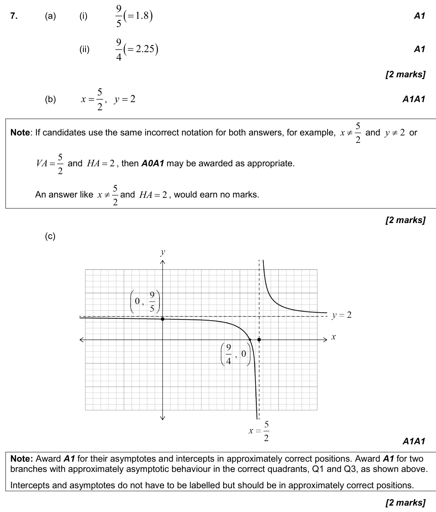
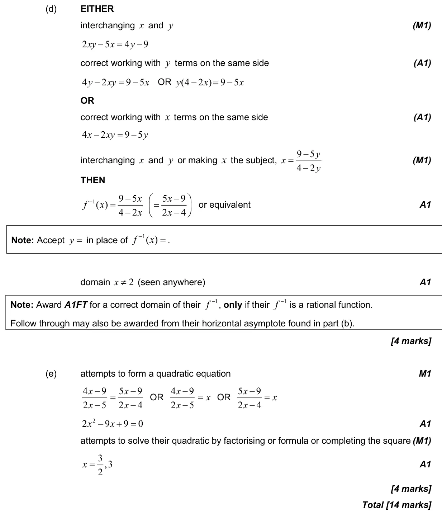

2.8 Reciprocal and simple rational functions, equations of asymptotes2.5 Composite functions, identity and finding inverse2.7 Solutions of quadratic equations and inequalities, discriminant and nature of roots
Question

Markscheme

